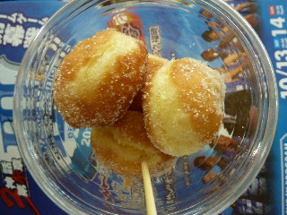

loco food breezeのマサラダ
2012/10/14
スサノオマジックの観戦に行ったら、会場でマサラダっていうのが販売していました。

ドーナッツですね。
油で揚げたドーナッツは美味しいなー。
焼きドとは風味が全然違いますねー。
ちっちゃいドーナッツなので、バスケの観戦をしながらでも食べやすかったです。
（以前は浜山公園近くにありました。）
島根県出雲市塩冶神前5-34-1
2012/10/14
スサノオマジックの観戦に行ったら、会場でマサラダっていうのが販売していました。

ドーナッツですね。
油で揚げたドーナッツは美味しいなー。
焼きドとは風味が全然違いますねー。
ちっちゃいドーナッツなので、バスケの観戦をしながらでも食べやすかったです。
（以前は浜山公園近くにありました。）